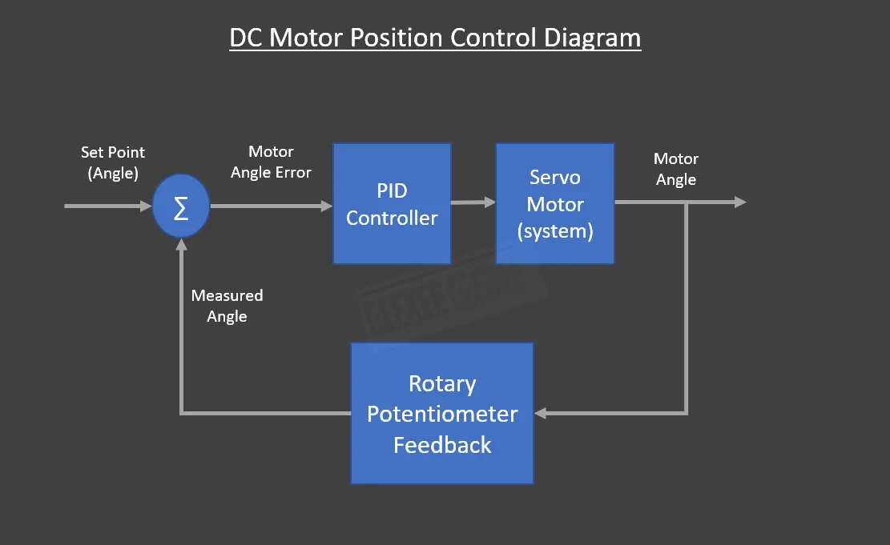
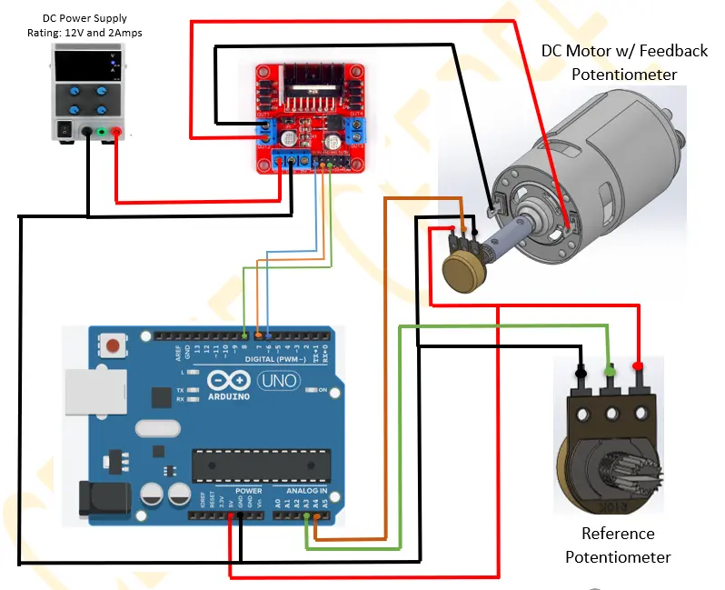

GeeKee CeeBee
Welcome to GeeKee CeeBee's Page: House of Mechatronics.
Contact Email: Ceebee1108@gmail.com
__________________________________________________________________________________________________________________________________
PID DC Motor Position Control

Step by step practical guide to position control of a DC motor using rotary potentiometer.
Formulate PID theory using Numerical Approximation method.
Write PID code from scratch (w/o using pre-written library).
Demonstrate the use of rotary potentiometers as feedback and control, L298n motor driver.
Disclaimer: The code and other information on this project are provided on "AS IS" basis with no warranty. Please follow best practices and assess
your own potential risks for this project.
Components List
Arduino Uno
DC Motor Double-ended Shaft (BestTong 775)
L298N Dual H-bridge Motor Driver
2X Rotary Potentiometer
Shaft Coupler (Custom)
DC Power Supply (6-12V)
Jumper Wires and Breadboard
Step-by-step video guide
In this video guide, you will learn how to control position of any DC motor by controlling the supply voltage. Arduino Uno is used to perform PWM voltage control using the PID controller.
Video covers the rotary potentiometer as feedback sensor, basic PID theory,, derivation of control law, understanding the discrete methods of calculating
derivative and integration of error. Please watch the whole video for better understanding.
Control Diagram
Rotary potentiometer feedback signal is used to determine the error angle between the reference angle from potentiometer and the actual motor angle. PID controller
simply controls the amount of voltage needed by the motor using PWM in order to reach the desired output.

Wiring Diagram
Below is the wiring diagram for the components used in this project.
Analog pins A3 and A4 are used for feedback and reference pot. Pin6 is the PWM pin to control the amount of voltage sent
to the motor driver. Pin7 and 8 are used to change motor direction by changing the polarity of the supply voltage with the help of
L298n h-bridge motor driver.
Make sure there's a common ground (not earth ground) between the motor driver, arduino and external power supply.

__________________________________________________________________________________________________________________________________
Arduino Code
//GeeKee CeeBee
// ************ DEFINITIONS************
int potPin = A3; // Reference Potentiometer
int encoder_pot = A2; // Position Feedback sensor
int val = 0;
int encoder_val =0;
float kp = 0.2;
float ki = 0.00000 ;
float kd = 2.00;
float Theta, Theta_d;
int dt;
unsigned long t;
unsigned long t_prev = 0;
int val_prev =0;
float e, e_prev = 0, inte, inte_prev = 0;
float Vmax = 12;
float Vmin = -12;
float V = 0.1;
const byte PWMPin = 6;
const byte DirPin1 = 7;
const byte DirPin2 = 8;
//***Motor Driver Functions*****
void WriteDriverVoltage(float V, float Vmax) {
int PWMval = int(255 * abs(V) / Vmax);
if (PWMval > 255) {
PWMval = 255;
}
if (V > 0) {
digitalWrite(DirPin1, HIGH);
digitalWrite(DirPin2, LOW);
}
else if (V < 0) {
digitalWrite(DirPin1, LOW);
digitalWrite(DirPin2, HIGH);
}
else {
digitalWrite(DirPin1, LOW);
digitalWrite(DirPin2, LOW);
}
analogWrite(PWMPin, PWMval);
}
void setup() {
Serial.begin(9600);
pinMode(DirPin1, OUTPUT);
pinMode(DirPin2, OUTPUT);
}
void loop() {
val = analogRead(potPin); // Read V_out from Reference Pot
encoder_val =analogRead(encoder_pot); // Read V_out from Feedback Pot
t = millis();
dt = (t - t_prev); // Time step
Theta = val; // Theta= Actual Angular Position of the Motor
Theta_d = encoder_val; // Theta_d= Desired Angular Position of the Motor
e = Theta_d - Theta; // Error
inte = inte_prev + (dt * (e + e_prev) / 2); // Integration of Error
V = kp * e + ki * inte + (kd * (e - e_prev) / dt) ; // Controlling Function
if (V > Vmax) {
V = Vmax;
inte = inte_prev;
}
if (V < Vmin) {
V = Vmin;
inte = inte_prev;
val_prev= val;
}
WriteDriverVoltage(V, Vmax);
Serial.println(Theta_d); Serial.print(" \t");
Serial.print(Theta); Serial.print(" \t ");
t_prev = t;
inte_prev = inte;
e_prev = e;
delay(10);
}